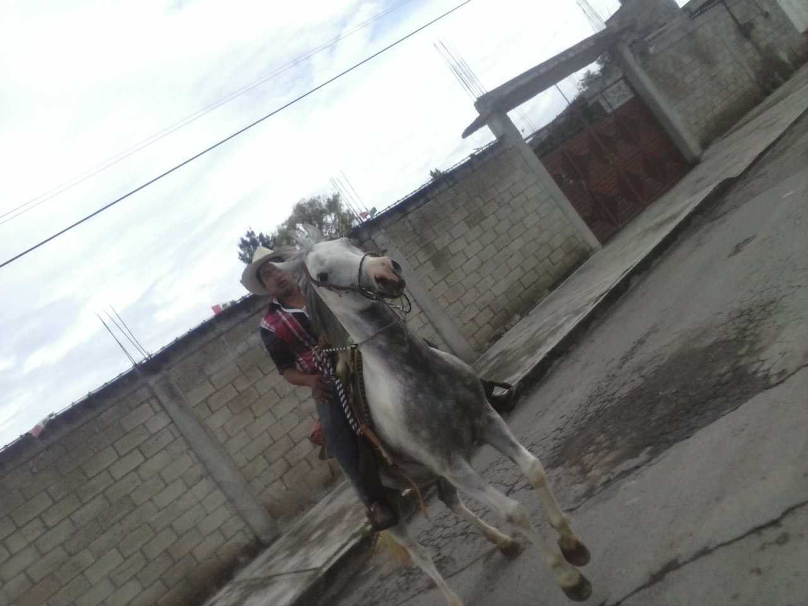

VILLA ILUMINADA 2014
Inaguracion De La Villa Iluminada 2014
Gran inauguración de la villa iluminada 25 de noviembre del 2014 atlixco puebla.
Atlixco, Pue.- La noche de este martes, ante miles de familias y un espectáculo de pirotecnia, el alcalde de Atlixco, José Luis Galeazzi Berra, inauguró la Cuarta Edición de la Villa Iluminada, que concluirá el próximo 6 de enero de 2015.

- ¿cuanta gente se piensa que visitara la villa iluminada?
- En donde inicia el recorrido de la villa iluminada
- Noche Buena
- Galeria
- Mi Opinion
